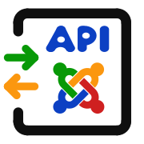

www.example.com/documentation/index.html?p1=A&p2=B#ressource \_____________/\_______________________/\________/\________/ | | | | host path query fragmentJoomla API example:
example.com/api/index.php/v1/config/application?page[offset]=30&page[limit]=30
\__________/\____________/\___________________/\_____________________________/
| | | |
host api path endpoints query
| Joomla API example:
example.com/api/index.php/v1/config/application?page[offset]=30&page[limit]=30
\__________/\____________/\___________________/\_____________________________/
| | | |
host api path endpoints query
Path:
Query:
Special characters like '[', ']' must be converted like in other HTML queries